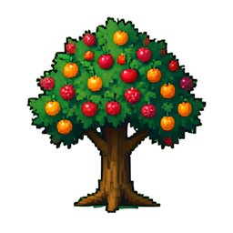

從 9×9 農田開始，讓整座農場慢慢運轉。
可自由選擇任意未購土地
已選取 3×3 土地
INSTALLED AUTOMATION
WELCOME BACK
你離開了一段時間。

LIMITED-TIME FARM FESTIVAL
活動期間開啟農場即可領取一次獎勵！緋櫻果樹種子已放入包包，請從下方工具列自行選擇土地種植。
FARM SETTINGS
植物與農具素材來自 FreeGameSprites Farm & Ranch Pack；農夫角色來自 OpenGameArt Green Cap Character，皆採 CC0 授權。
SHARE FARM
這是此帳號固定的唯讀網址；之後每次保存農場，都會自動同步到同一網址。
SHARED FARM
分享網址可能已失效或停止分享。